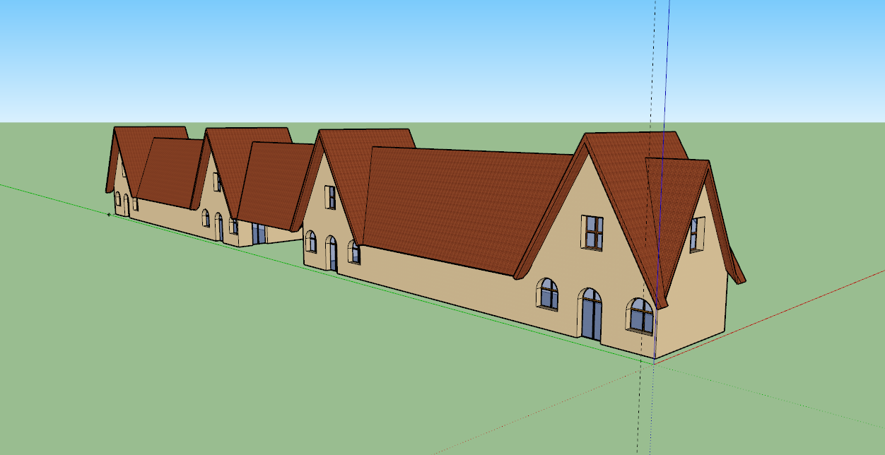
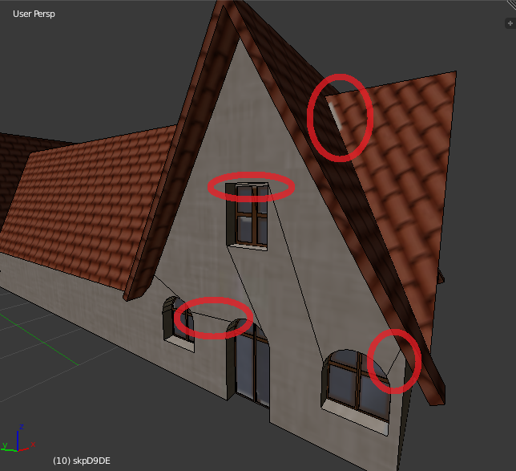
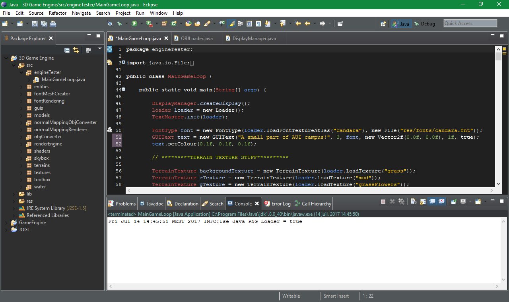
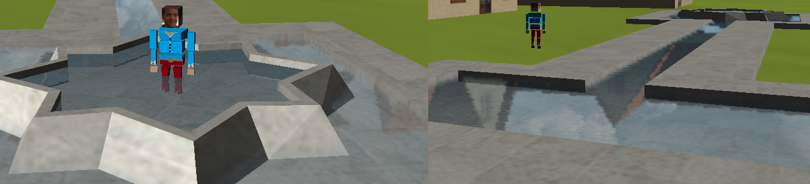

I am currently a senior studying to complete a Bachelor of Science in Computer Science degree at Al-Akhawayn University in Ifrane.
I am looking to do my end of studies internship during Summer 2019.
I thrive when I’m allowed to be creative and video game engineering seems interesting to me because I think that it gives a lot of room to creativity using my computer science background to make all my ideas come to life.

Simulating real world places is always really interesting because it allows experiencing their sight from anywhere in the planet, and if done right it can help solve some interesting optimization problems that otherwise would take a much longer time. My project is about implementing a 3D model of a small part of AUI campus.
After learning how to manually create a cube and a pyramid during the first part of the course, it became obvious that making any kind of more complex shapes would be extremely hard, the challenge would be more on finding out where each point of an objects geometry is rather than learning new and more complex computer graphics generation techniques.
So, the first question that came into my mind: is there any way to make 3D models using a wellknown software, and then rendering them using Java code? The question was first answered by Dr. Kevin Smith, who told me to look up .obj files. After some research I discovered that it is indeed possible, and that there are multiple files types (including .obj) dedicated to storing objects information. However, due to their simplicity .obj files are preferred for people that just started to learn openGL.
This is when I found the very good YouTuber ThinMatrix, who made a Java Game Engine from scratch and who explains very nicely how he went through every single step. He made a file called objLoader.java that reads our .obj files and transforms them into Matrices ready to be used in our Java Engine. After reading and understanding his code, it was clear that the basic things that we learned in the course will no longer cut-it, and it was time to use more sophisticated tools to work on our projects.

It is important to note that the Java Engine is made by ThinMatrix, a YouTuber that makes a tutorial series on how to create a 3D Java game with OpenGL using the library LWJGL (Light Weight Java Game Library).
Link to his YouTube channel: https://www.youtube.com/user/ThinMatrix
Now that I’ve found an object parser, I had to start making the 3D objects needed for my project. This is when I downloaded Blender. This software is used to make really sophisticated video games, so it was no surprise that it was hard to use, and in my case I used it to make 3D models of objects and to use UV Mapping to put texture on them.

Picture 1: Untextured Models in Blender.
Learning how to do so was very time consuming. In fact, it was so time consuming that I changed the software I use to model my objects, and this is when I downloaded Sketch-Up. Sketch-Up is very easy to use and is very intuitive, however, it does not support UV Mapping which is an essential part of the Java Game Engine that ThinMatrix made. So, I had to convert my Sketch-Up project to a blender project. Thankfully, I’ve found a person who made a plug-in just for this (pros of using an open source software). I was excited at first, but then I found out that using this method didn’t really convert the sketch-up project 100% as it was originally. Unnecessary details were created. Extra edges and vertices were added, and half of the model didn’t render in the Java Engine.
Picture 2: Use of Sketch-Up to make a Building model that uses materials instead of UV Mapping.

Picture 3: Problems encountered after importing a building model from Sketch-UP to Blender.
Picture 4: Problems encountered after rendering the imported model from Sketch-Up to Blender.
I came to the conclusion that it would take less time to start from scratch and make a whole new model in Blender than trying to fix the messed up imported project from Sketch-Up to Blender. And this is when I went back to using Blender only, again. I already had previous experience with Photoshop, so it was easy for me to make UV Maps, I looked for the textures I wanted on my objects, I’ve put them where Blender would expect them, I adjusted the number of the texture tiles and I cropped real world photos and implement them in the textures.

Picture 5: Use of Photoshop to make UV maps.
I am already familiar with Eclipse, so it was easy to create a project for the Java Game Engine, include all the necessary libraries, etc.
Picture 6: Use of Eclipse to run the Game Engine.
Building a single building was a big hassle, it is what took most of my time on this project, but after every failed attempt I reinforced my knowledge about Blender and the end results turned-out to be pretty decent.
Very close. I made a textured 3D model of the cafeteria building, a textured 3D model of the fountain next to it that contains shiny, reflective and rippling water, I used a textured terrain and moving clouds that use the skybox method (3D projection of textures to a cube that rotates). What I didn’t make is animating my character, or implement physical properties.

Picture 7: Real photos incorporated into the textures of the building.

Picture 8: The building’s corresponding UV Map.
Picture 9: Realistic water rendering contained in the fountain model.
Animations
Using blender I would create a “skeleton” inside my character’s “body”, it’ll be very simple and structured in such a way that if I move a “parent bone” I would move its “child bones” too. Suppose now that the bone of the middle section is the parent bone of 3 other bones: 1 for the head and 1 for each arm. Tilting the middle section forward would mean tilting the head and arms forward too. Of course the child bones are free to move without a problem.
This skeleton will not be rendered, it is just a way to facilitate animation, what will really be rendered is all of the vertices changing their position depending on what bone was moved. If we want our character to make a specific animation, we could make key frames in blender and then link the two together by making a program that modifies the position of each bone to go from the starting key frame to the ending key frame smoothly.
Physical Properties
For example, if I wanted to make a dynamic fountain, I would need to use a dynamic substance, one that uses particles to simulate water. Simulating water being shot from the fountain would require simulating the transfer of energy from one particle to another and then by including gravity into the equation the particles would come back to the surface after they reach a certain height.

Picture 10: Birds’ eyes view over the rendered scene.
Close Project
I built a desktop application using Java that shows a graphic user interface (GUI) of an MP3 player. It has two main panels:
A big one in the center, which has three tabs:
A smaller one to the right, it has two blocks:
If we select one tab in the center panel, songs are organized according to that tab. For example, if we click on the “Artist / Group” tab we will see all of the songs organized by the artist or group that created the songs. Clicking on the other tabs has a similar effect except that it organizes the songs by either style or album.
The panel to the right has a dynamic couple of blocks:
Finally, we can save the current state of the player by clicking on menu then save, this means the next time we come back we will see our playlist block and most recently played list block the same as before we got out of the MP3 Player.
Close Project
I worked on building a website for “Centre Ahli”, a center that welcomes boys in precarious situations whose ages vary between 7 and 15 years, and I used the following to do so:
Client side:
Server side:
Software:
To automate some tasks that are performed daily by the educators, such as:
To store information, I used a database and handled it using Microsoft SQL Server Management Studio. To program I used Visual Studio which allows using all of the technologies needed in one program.
The website is still under construction and is not available for the public right now.
Close Project